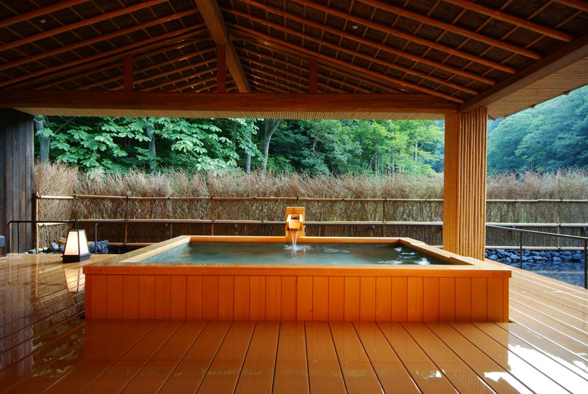
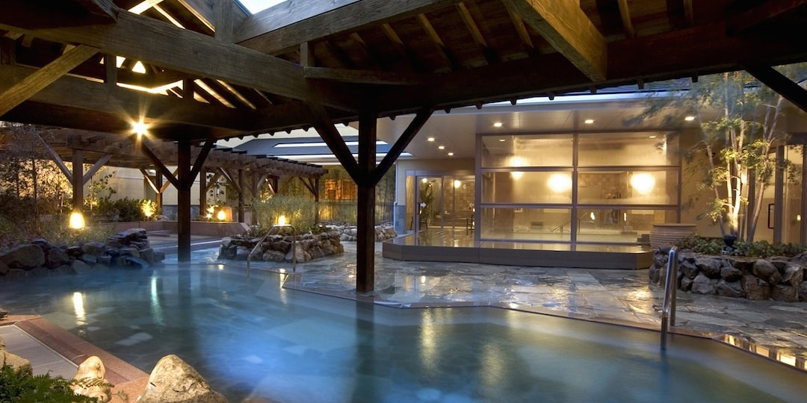

Hot spring baths know as 'Onsen' are a big part of Japanese culture. It took me a few years of living here to pluck up the courage to enter one, but once I did I was hooked! If you visit these public baths, you can usually enjoy different types of relaxation treatments such as carbonated springs, saunas, bedrock baths and steam rooms.
  RETURN TO HOMEPAGE